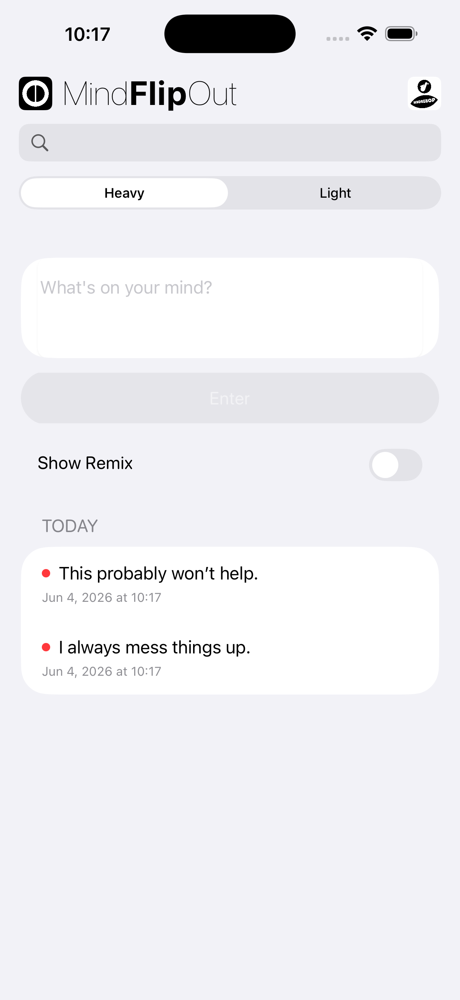
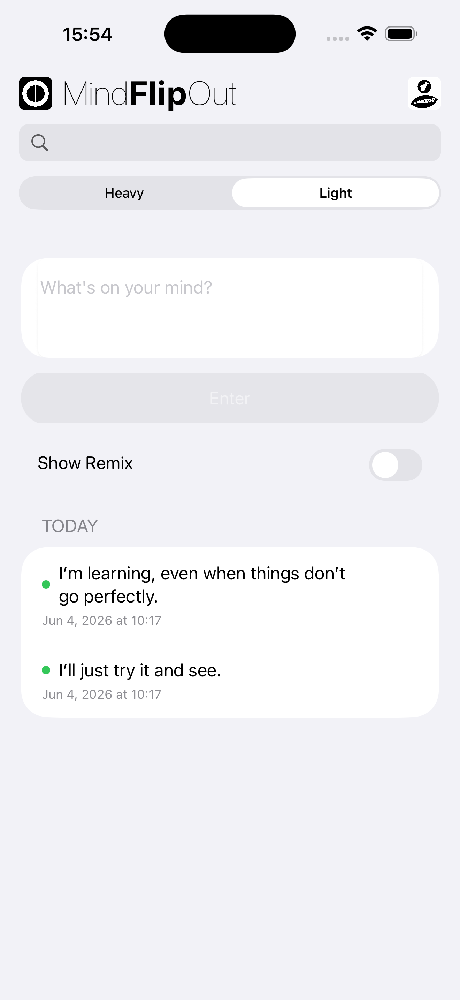

MindFlipOut is an early-phase thought friction reduction tool.
It allows a looping thought, which is often negative and/or heavy, to be written once and viewed from more than one angle before it gains momentum.
Version 1.9 adds Manual Zone for sending entries directly to MindZoneOut, Send to Recipe for sending entries directly to MindEntry recipes, and updated swipe menu organization.
Not a positivity tool. Not therapy.
A structured space where a thought can be separated into Heavy and Light perspectives.
The purpose is structured interruption before escalation.


Used early — before a looping thought's repetition increases intensity.
MindFlipOut can be opened from MindEntry when a thought is routed toward a Flip step.
When launched from MindEntry, the thought can open directly in Flip mode with text prefilled, so the Heavy → Light response begins without returning to the main screen first.
Version 1.6.1 improves Recipe flow further by preventing Auto Shout from interrupting active MindEntry recipe steps.
Heavy and Light entries can be sent directly into compatible MindEntry Recipes.
A thought can move from capture and reframing into a structured sequence without being rewritten.
This allows thoughts to continue into Stateful Recipes, CogniHacks, Hallway Mode, or other MindEntry flows when needed.
Send to Recipe is optional. Many thoughts still begin and end inside MindFlipOut.
Heavy and Light entries can be sent directly to MindZoneOut.
Sometimes a thought does not need another response. It needs less stimulation.
Manual Zone allows a thought to move directly into a quiet reset space.
Manual Zone complements Flip, Remix, Manual Shout, and MindEaseOut as another optional path for a thought.
MINDBEBOP introduces a modular architecture for structuring the Mental Background layer, helping you reclaim attention quietly consumed by unresolved thoughts.
Copyright © 2026 MINDBEBOP — All rights reserved.